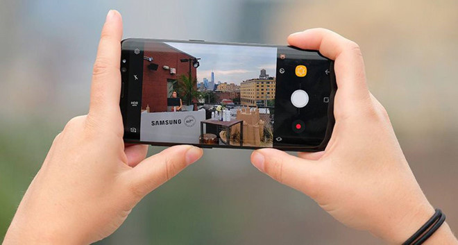

Ra mắt smartphone có camera 200MP cực xịn, giá chỉ 10,5 triệu
The Gioi Di Dong 3 giờ
Khám phá smartphone màn hình gập được đầu tiên của Samsung
Thanh niên 6 giờ
Điều gì khiến iPhone 15 Series trở nên kém cỏi?
VOV 6 giờ
OnePlus 12 xịn cỡ nào mới khiến người dùng quên iPhone 15?
VietQ 13 giờ

Vivo trình làng bộ đôi Vivo V29 5G và V29e 5G, sạc nhanh tới 80W
24h-Hitech 9 giờ